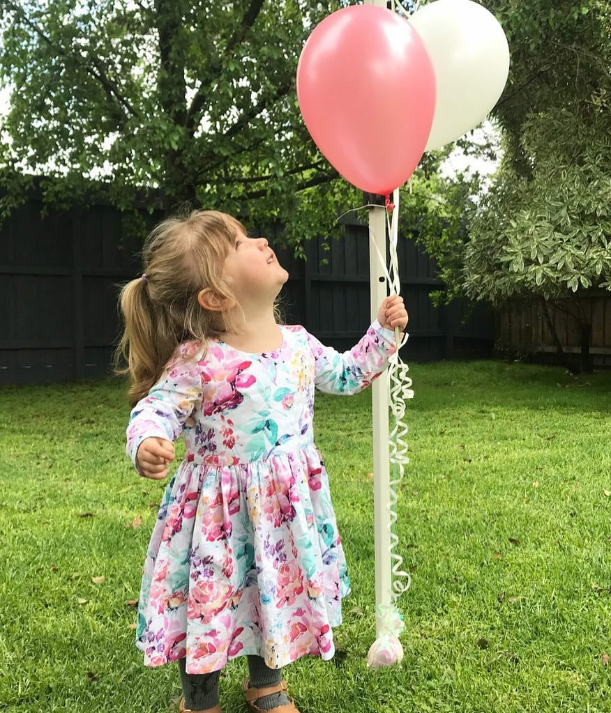

Evelyn
Australia Osteogenesis imperfectaEvelyn is a strong willed, adventurous, intelligent almost 3 year old. She’s so full of life and her cheekiness brightens every room she walks into. She loves dancing, singing and is a rockstar swimmer who just happens to have brittle bones (osteogenesis imperfecta).
A comedy duo Evelyn and her brother Austin are likely to be when they grow up. They are immensely funny; the way they feed of each other is awesome to see and we love watching the bond they have grow stronger. It’s always tough when a fracture occurs but Evelyn has taught all who know her a lot about resilience and strength. She’s the most mentally tough kid I know! We can’t wait to see what her future holds!
Get involved Back to all stories